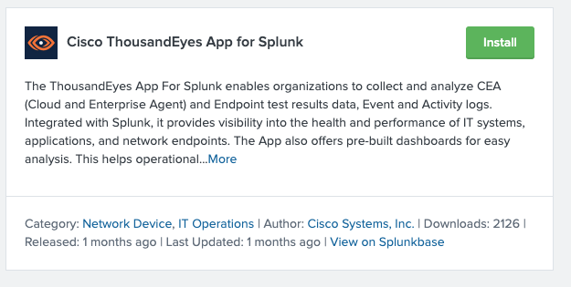

1. Installation
Source: The app is available on Splunkbase. It can be downloaded and sideloaded, or installed directly from within Splunk.
If note done yet please follow these instructions to create TE account, test and alert rule -> here
Install via Splunk UI
In our lab environment, we install directly through the Splunk interface:
- Navigate to Apps → Find More Apps
- Search for
Cisco ThousandEyes App for Splunk

- Click Install
- Enter your Splunk credentials if prompted
- Restart Splunk if required
✅ Once installed, the app will appear in your Apps menu as Cisco ThousandEyes App for Splunk.